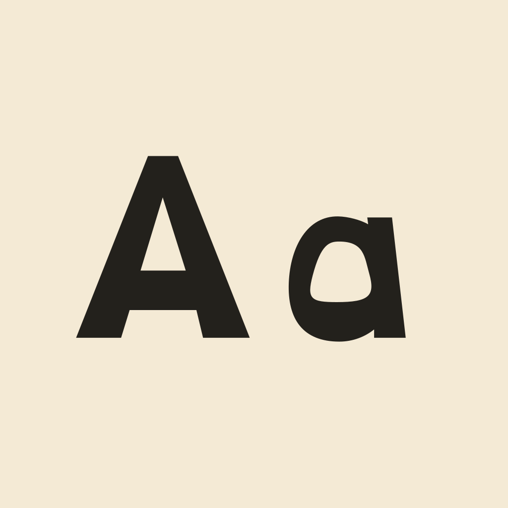
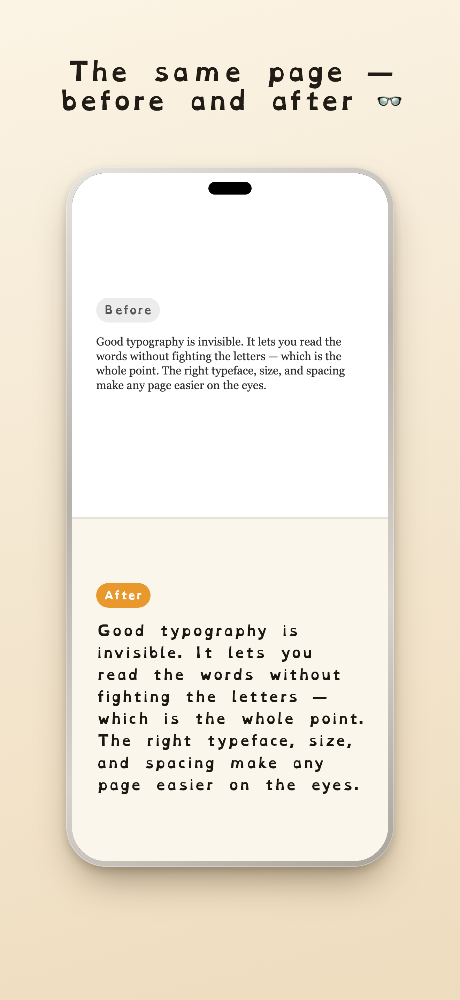
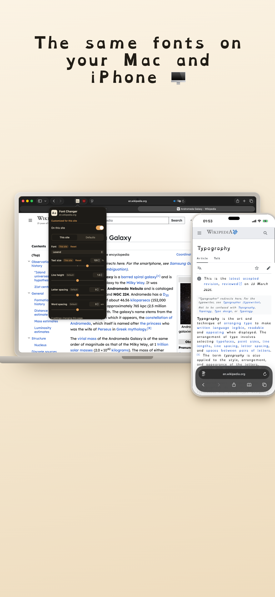
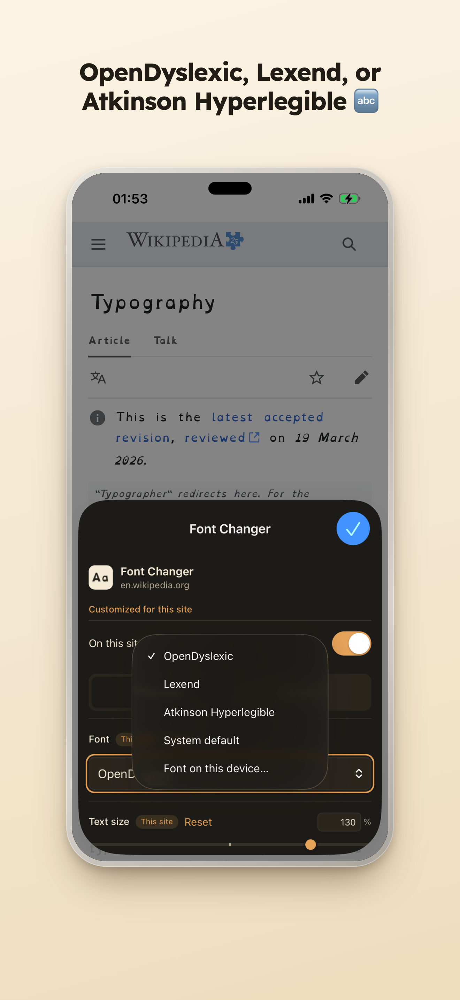
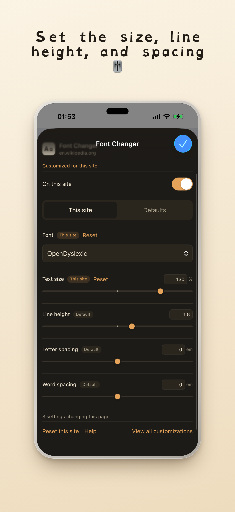
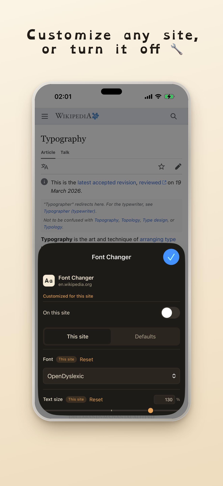

Font Changer
A font switcher for Safari. Swap any page's text to a readable font and adjust the size and spacing.





- Built-in fonts: OpenDyslexic, Lexend, and Atkinson Hyperlegible — or any font installed on your device.
- Adjust text size, line height, letter spacing, and word spacing.
- On by default on every site; turn it off per site. Your defaults apply everywhere, and any site can override them.
- Leaves code blocks and icon fonts alone.
- No tracking, no accounts, no network requests. Fonts are bundled in the app; nothing leaves your device.